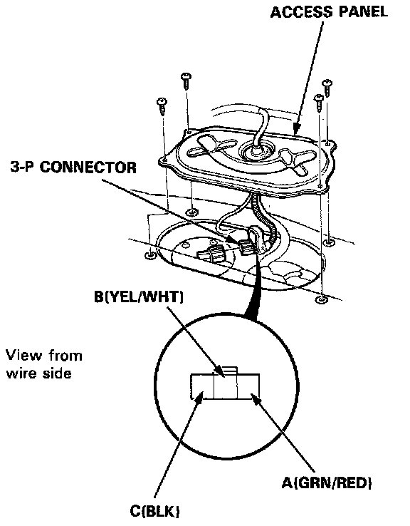

Fuel Gauge: Testing and Inspection

Fuel Gauge Test
1. Before testing, check the No.13 (15 A) fuse in the under-dash fuse/relay box.
2. Remove the rear seat, then remove the access panel.
3. Disconnect the 3-P connector from the fuel gauge sending unit.
4. Connect the voltmeter positive lead to the B (YEL/WHT) terminal and the negative lead to the C (BLK) terminal, then turn the ignition switch ON. There should be between 5 and 8V.
^ If the voltage is as specified, go to step 5.
^ If the voltage is not as specified, check for:
- an open in the YEL, YEL/WHT or BLK wire.
- poor ground (G305).
5. Turn the ignition switch OFF. Connect a jumper wire between the B (YEL/WHT) and C (BLK) terminals.
CAUTION: Do not apply battery voltage to the terminals; it will damage the fuel gauge.
6. Turn the ignition switch ON. Check that the pointer of the fuel gauge starts moving toward the "F" mark.
CAUTION: Turn the ignition switch OFF before the pointer reaches the "F" mark on the gauge dial; if you don't, you may cause damage to the fuel gauge.
^ If the pointer of the fuel gauge does not move at all, replace the gauge.
^ If the fuel gauge is OK, check the sending unit.